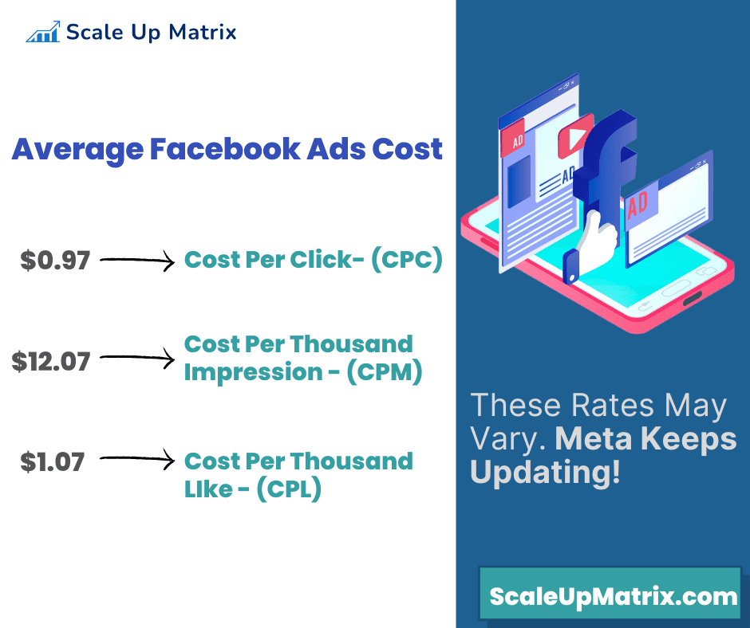

Introduction
Facebook advertising is the best way to target your customers. It’s also an effective means of marketing and getting consumers to buy your product or service. However, there are many misconceptions about Facebook ads. In this guide we will discuss all you need to know about Facebook advertising and how it can help you reach your target audience.
Facebook advertising is the best way to target your customers
Facebook advertising is the best way to reach your ideal customers. By using a targeting tool, you can determine who is most likely to buy your product or service and which demographic groups they fall into. You'll also know if they're in particular locations or have certain interests that could make them more likely than others to purchase something from you. And if those people are more likely than others just because of their psychographic traits (e.g., age group) then that's okay too!
Facebook ads allow advertisers like yourself to target specific behaviors and psychographics like gender, marital status, household size and income level—all key factors when deciding who should receive an ad about buying tickets for a concert by their favorite band at its upcoming show in town next week!
Let's Begin With Why To Choose Facebook Ads!
1. Facebook’s Incredible Reach› Facebook’s incredible reach is one of its biggest strengths. The social network boasts over 2 billion users, and this number continues to grow at a rapid pace. As a result, Facebook is now the largest social media network in the world by a large margin—and it'll only continue to grow as more people discover what an exceptional platform it truly is.
› Facebook isn't just another social media platform; rather, it's more like an operating system for businesses that you can use to promote your brand or products on their own terms (or even yours).
› As such, there are many reasons why you should consider using Facebook ads: they're effective at reaching people who already spend time on your site every day; they allow you to target specific demographics; they offer great conversion rates when paired with other digital marketing tools like email campaigns or website optimization efforts...
2. Facebook Is Mobile-Friendly› Facebook is one of the most popular social media platforms in the world. It was founded in 2004 and has over 2 billion users as of January 2019. That’s more than 1/3rd of all internet users!
› Facebook has a mobile app for almost every device, including smartphones, tablets and even desktop computers. The company also offers an Android app that allows you to use your phone or tablet as a remote control for accessing your account on Facebook through desktop computers.
› If you want more information about how to get started with Facebook advertising campaigns then keep reading…
3. Targeting Your Ideal Customer› Facebook advertising is the best way to target your ideal customer.
› Facebook allows you to target your customers based on their interests and demographics, which means that you can reach out to specific audiences that are most likely interested in what you have to offer. For example, if you sell pet supplies then it would be beneficial for your business if people who have pets were able-bodied (meaning they can lift heavy items), or if they live in certain areas such as California or Texas where there is a high demand for pet food because it’s more expensive than other types of food like chicken nuggets or hamburger meat.
› Facebook advertising also allows companies to target people who are currently engaged with their brand through things like likes, shares and comments made on posts from other users about products/services offered by businesses on Facebook platform; these engagement metrics give advertisers insight into how well targeted messages resonate with consumers – especially since many times we don’t realize how much influence brands have over us until something goes wrong!
› The third reason why Facebook Ads work so well compared with other forms of digital advertising mediums such as Google AdWords etc., is because unlike other online platforms that rely purely on tracking cookies placed within web pages visited by visitors over time - FB does not require any special tools beyond JavaScript code running within browser window which tracks whether user clicked ad link versus non-clicked version during visit session; thus making targeting easier than ever before!
4. The Low Cost Of Facebook Ads› Facebook advertising is one of the most affordable digital marketing channels.
› The cost of Facebook ads is based on your budget and the audience you want to reach. You can set a daily budget and stop the campaign at any time.
5. Branding› Facebook advertising is a great way to build brand awareness, get more sales and generate leads. In today's digital world, it's important to have your company's name out there in the public eye.
› Facebook ads can help you build your brand by creating awareness and increasing trust. They also provide a more memorable experience for customers who may not have had the chance to interact with you before seeing an ad on Facebook or Instagram.
6. Instant & Measurable Result› You can measure your results on Facebook by using the Facebook analytics tool. The tool is a great way to see what's working and what isn't working in your campaign, as well as which actions have been taken by different audiences that you're targeting.
› You can also use Google Analytics to measure the performance of your Facebook ads. If you want to understand more about how people interact with your ads, this is a good option for tracking them over time so that you can see how they change over time as well as when they stop interacting with them (and why).
How Much Does It Cost To Run Ads On Facebook?
Facebook has become a top advertising platform, but how much do ads cost? Luckily, we have a great breakdown of what you can expect to pay to run ads on Facebook.
The cost of Facebook ads depends on the amount of traffic you wish to receive and the type of audience you're targeting. For example, if you want to target a specific demographic (such as people in their 20s), then it will be more expensive than if your goal was simply getting as many eyeballs on your page as possible.
Facebook advertising costs, on average, $0.94 per click and $12.07 per 1000 impressions. Ad campaigns focused on earning likes or app downloads can expect to pay $1.07 per like and $5.47 per download, on average.
The Different Types of Ads You Can Create on Facebook
Facebook Ads has 3 main types of ads that you can create:
• Ads for Awareness: These are the most basic and cheapest type of Facebook ad. They are based on likes, comments and shares to attract new users to your page. The aim here is just to get people's attention and show them what you have to offer.
• Ads for Conversions: These are more expensive than the previous one because they require a higher level of engagement from users before they click on them or buy something from your page (like filling out a form). These types of ads target people who have already expressed interest in buying something by clicking on other related posts or pages within their timeline rather than just randomly browsing through it. For example, if someone searches "cheap flights" then you could advertise those results so that he/she finds out about all the different airlines around him/her instead of just seeing results with only one airline name mentioned inside their search query itself since there will always be other options available besides just saying "cheap." This allows him/her more time saving options when deciding whether buying tickets online or not because now there're many different choices available rather than just one single option only showing up at once which would take too longand waste time as well.
• Ads for Audience Growth: This kind of ad campaign is basically for those who want more people to join their page or like their posts on Facebook. These types of ads are usually placed in one's news feed so that they can easily see it and click on it if they're interested in what you have to offer them. For example, if someone has recently changed his/her profile picture then you could use this opportunity to advertise your product or service by saying something like "change your profile picture today and get 50% off all orders!" This way more people will be aware about what's going on..
Conclusion
Facebook advertising is a great way to promote your business and get customers. You can target your ideal customer by using Facebook’s custom audiences, and the low cost of running ads makes it a worthwhile investment for any small business owner or entrepreneur who wants to sell more products or services online.